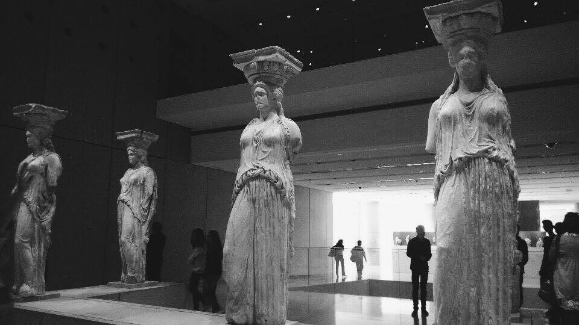

Ženske so v antiki spadale v privatno sfero. Bile so, kot pravi Aristotel, ponetikos, v isti kategoriji kot sužnji, čeprav po drugačnih načelih. Grški filozofi so pod pojmom človeka razumeli osebo moškega spola, ženske pa so jim bile podrejene. Znameniti grški dramatik Evripid, ki je sicer v svojih dramah prikazal suženjski položaj žensk, je menil, da je en moški več vreden kot tisoč žensk.
